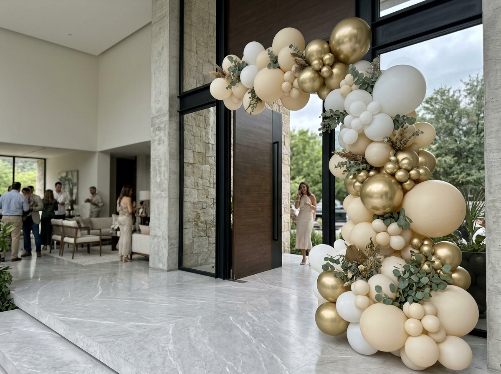
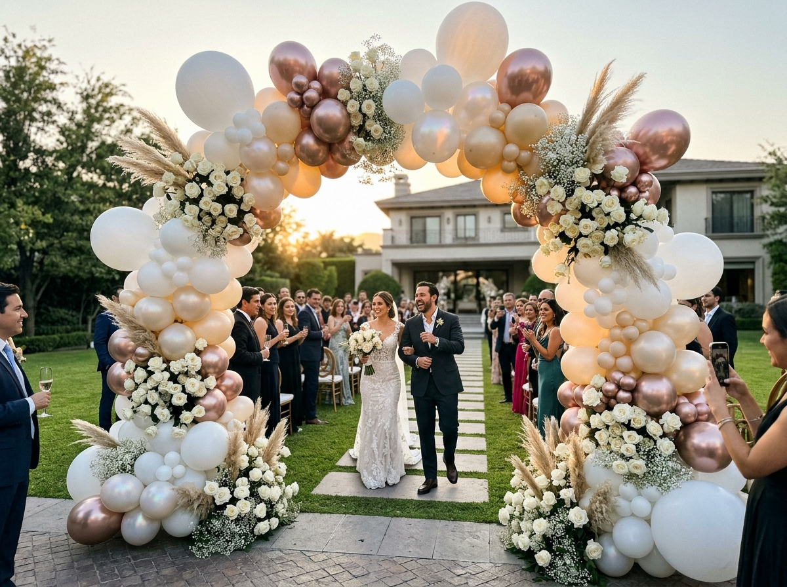
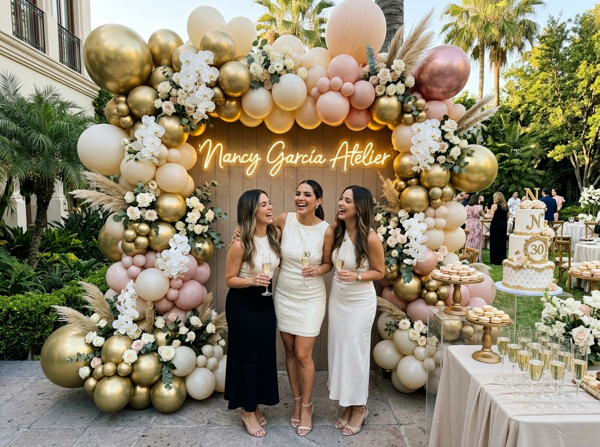
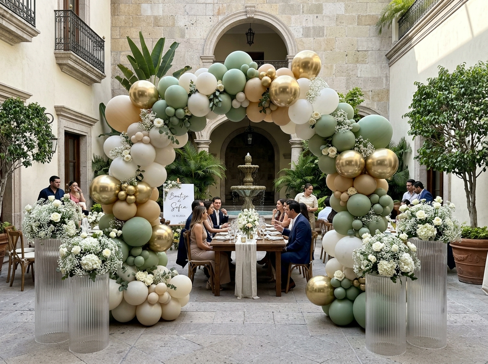
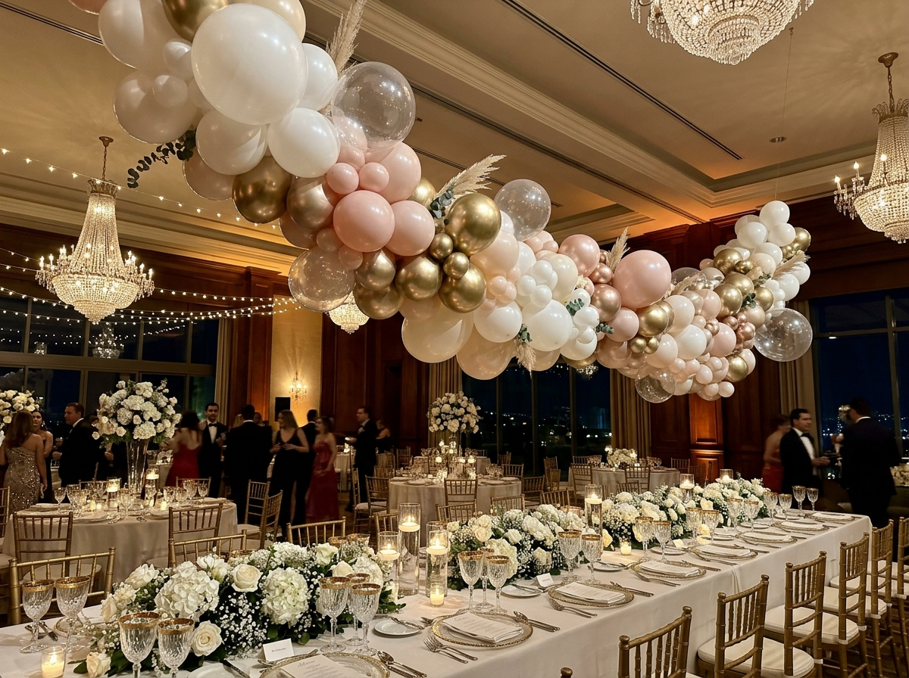
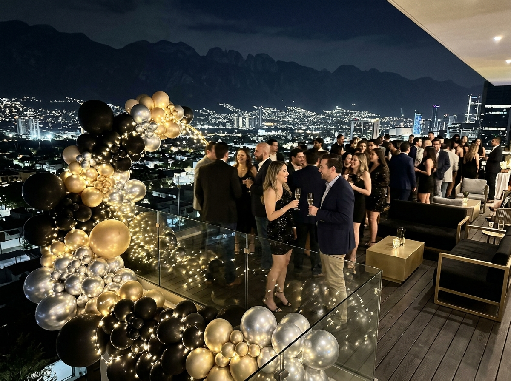

ESCENOGRAFÍA & ARTE
EN GLOBOS DE LUJO
Instalaciones orgánicas monumentales, arquitectura en globos biodegradables y ambientaciones a medida para residencias exclusivas, bodas y galas en San Pedro Garza García.
NO DECORAMOS EVENTOS.
CREAMOS MOMENTOS.
Transformamos la atmósfera de tu celebración con instalaciones visuales que cautivan la atención de todos tus invitados.
LA MAGIA EN
MOVIMIENTO.
Disfruta de nuestros videos oficiales mostrando nuestras creaciones con arte en globos, instalaciones monumentales y montajes de autor.
NUESTRO TRABAJO.
EVIDENCIA DE CALIDAD.
Explora nuestra selección de eventos reales: instalaciones monumentales, arcos orgánicos y escenografía de autor en San Pedro Garza García y Monterrey.


Nombre del Proyecto
Montaje exclusivo realizado bajo la dirección creativa de nuestro equipo de diseño de interiores y eventos.
QUIERO ALGO ASÍ PARA MI EVENTO
ESCENOGRAFÍA & MONTAJES
EXCLUSIVOS EN SPGG.
Diseños de autor con globos 100% orgánicos biodegradables de importación, paletas de color a medida y floristería fina. Inversión mínima a partir de $5,000 MXN.
INSTALACIONES MONUMENTALES
Guirnaldas colosales a doble altura para residencias en Chipinque y Valle Oriente, albercas infinitas y fachadas de gala.
ARCOS ORGÁNICOS BESPOKE
Composiciones asimétricas con esferas gigantes de látex puro, microglobos cromados y toques botánicos naturales de alta costura.
BODAS & GALAS VIP
Túneles nupciales, techos densos de globos, cascadas sobre mesas de honor y fondos fotográficos majestuosos en recintos exclusivos.
CASCADAS & TECHOS FLOTANTES
Estructuras suspendidas con fijación invisible de nivel arquitectónico, esferas translúcidas burbuja y luces cálidas integradas.
BACKDROPS & PHOTO OPPORTUNITY
Mamparas estriadas en acabados de autor, letreros de neón personalizados, pedestales cilíndricos y marcos orgánicos fotográficos.
PETIT COMITÉ DE AUTOR
Montajes selectos para bautizos, primeras comuniones y celebraciones privadas con paletas sofisticadas (salvia, arena y oro pulido).
DE UN ESPACIO VACÍO
A UN MOMENTO INOLVIDABLE.
Arrastra el deslizador central para presenciar el impacto de nuestras decoraciones en vivo.
DESPUÉS (ALTA ESCENOGRAFÍA SPGG)
 ESTILO CONVENCIONAL
ESTILO CONVENCIONAL
NUESTRO PROCESO EN
4 PASOS SENCILLOS.
Nos encargamos de todo para que tú solo disfrutes de tu celebración sin preocupaciones.
PLATICAMOS
Cuéntanos tu idea, fecha del evento, lugar y la experiencia que sueñas crear para tus invitados.
DISEÑAMOS
Creamos una propuesta visual personalizada ajustada a tu paleta de colores, espacio y presupuesto.
MONTAMOS
Nuestro equipo profesional acude al salón o residencia con puntualidad para realizar la instalación impecable.
DISFRUTAS
Tú solo ocúpate de celebrar y recibir los halagos de tus invitados por una decoración memorable.
PRESENCIA EXCLUSIVA EN
SAN PEDRO GARZA GARCÍA.
Atención prioritaria y logística especializada para residencias, terrazas privadas y los salones más prestigiosos del área metropolitana.
Chipinque & Valle Poniente
Montajes monumentales para residencias en la montaña, terrazas con alberca y jardines contemporáneos.
Valle Oriente & San Agustín
Penthouses, hoteles de lujo, clubes privados y recepciones de alta alcurnia en el corazón corporativo y residencial.
Carrizalejo & Las Calzadas
Instalaciones escenográficas para residencias patrimoniales, bodas de ensueño y jardines de gran escala.
Valle de San Ángel & Santa Bárbara
Bautizos petit comité, cumpleaños de autor y celebraciones exclusivas con ambientación de revista de diseño.
ARMA TU DECORACIÓN
A TU MEDIDA.
Selecciona el tipo de evento, servicio y paleta preferida para enviarnos una cotización personalizada por WhatsApp.
¿LISTO PARA TU PROPUESTA PERSONALIZADA?
Envía tus elecciones directamente a Nancy García por WhatsApp.
CLIENTES DE ALTA GAMA
EN SAN PEDRO GARZA GARCÍA.
La satisfacción de nuestras clientas en residencias y galas privadas respalda la maestría de nuestro atelier.
“Contratamos la instalación monumental para nuestra residencia en Chipinque. El arco orgánico en champagne y oro cromado dejó a todos los invitados sin palabras. El nivel de detalle y puntualidad de Nancy García y su equipo es impecable.”
“La cascada flotante de globos y el túnel nupcial para nuestra boda en Valle Oriente fueron una verdadera obra de arte. La calidad del látex biodegradable y el acabado satinado superaron cualquier expectativa.”
“El montaje de globos para el bautizo de mi hija en tonos salvia y perla fue perfecto. La floristería integrada y las esferas espejo le dieron una elegancia inigualable. Inversión 100% justificada para eventos de alta gama.”
NUESTRAS ÚLTIMAS
PRODUCCIONES
Inspírate con nuestras coberturas en vivo, montajes arquitectónicos y detalles de diseño escenográfico.


AGENDA TU FECHA CON
NANCY GARCÍA ATELIER.
Completa tus datos para enviarte una propuesta preliminar a tu WhatsApp 81-2900-3343. Inversión mínima en proyectos de autor desde $5,000 MXN.